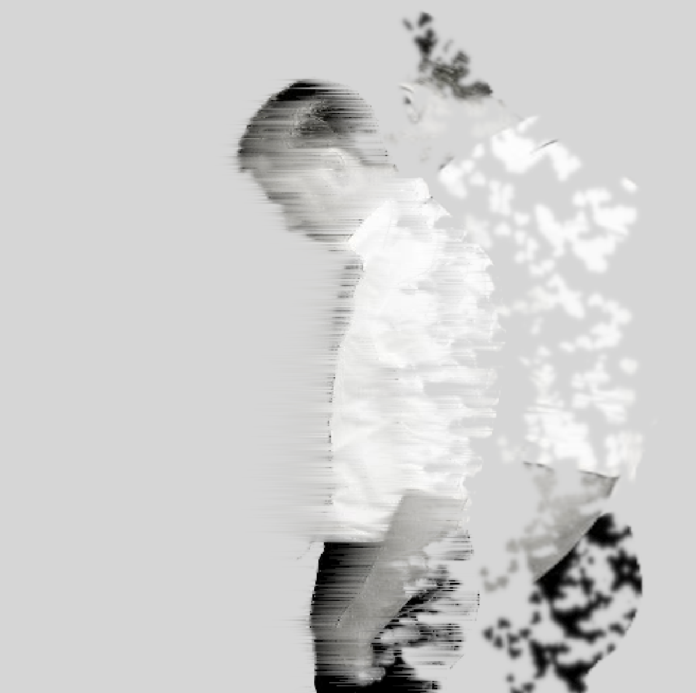
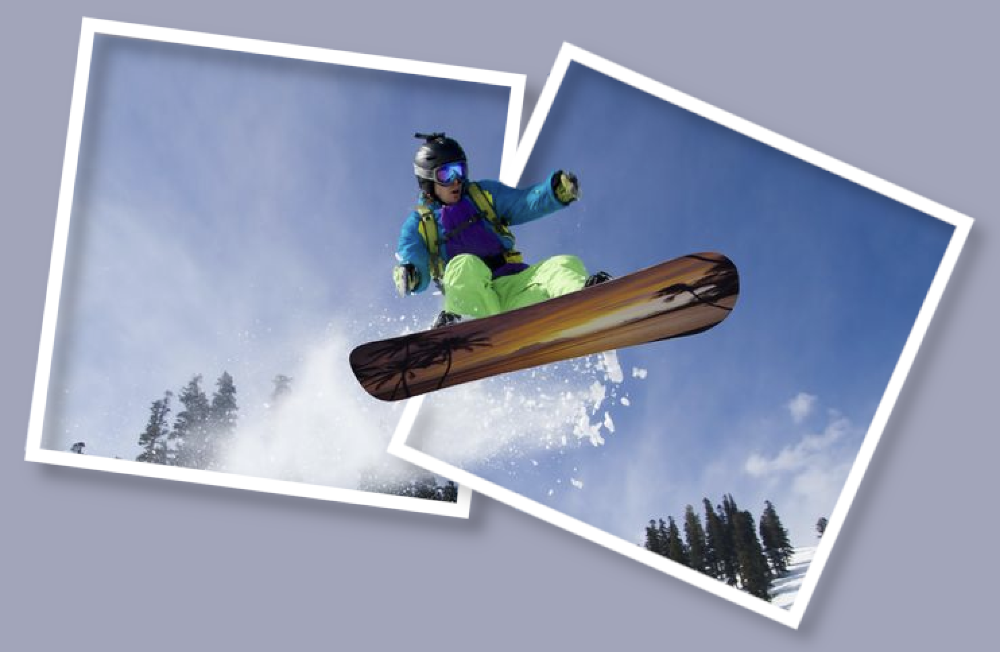
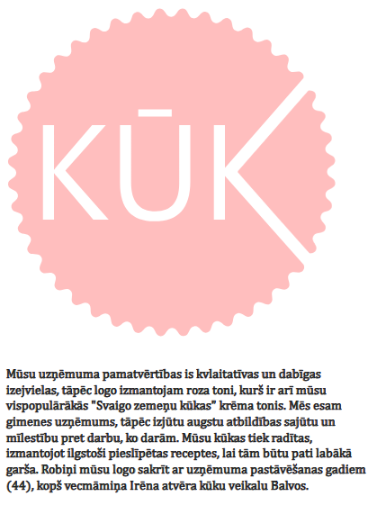
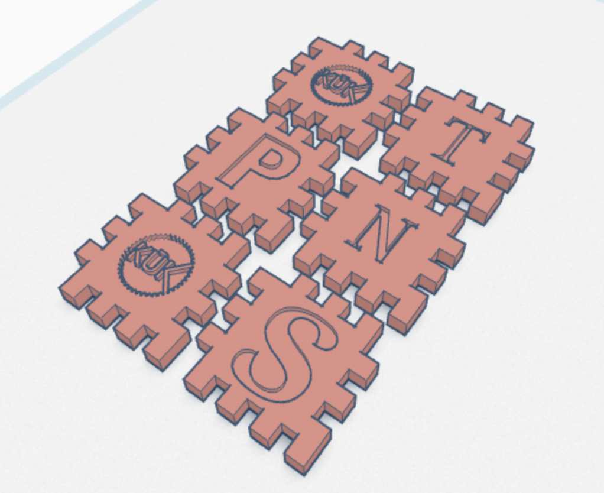
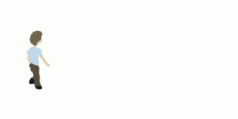

Šo gadu iesāku darbojoties ar grafiskā dizaina programmām Gimp un Inkscape. Tur strādāju pirmos 3 mēnešus. Sākumā, lai saprastu, kā strādāt ar Gimp, es es rediģēju attēlus. Vēlāk veicām nedaudz radošāku uzdevumu, kur, sekojot paraugam video, izveidojām savu vārdu skaistā noformējumā.


Nākamais uzdevums bija pa grupām izveidot biznesa vizuālo noformējumu. Tas bija ilgtermiņa projekts. Konkrēti mūsu grupa strādāja ar uzņēmumu "KŪK", kas ir ģimenes konditorijas izstrādājumu uzņēmums. Pirmais uzdevums bija izveidot logo un uzrakstīt aprakstu par to. Vēlāk bija arī jāizveido kuba 3D modelis, kas saliekas kā puzle. Uz tā bija jāattēlo logo un grupasbiedru uzvārda iniciāļi. To mēs veicām interneta programmā Tinkercad.


Pēdējais projekta uzdevums bija izveidot īsu filmiņu par projekta procesu. To es veidoju programmā CapCut.
Kad bijām apguvuši pamatus, izveidojām arī savu gif. Tas bija jāveido par mūsu personīgo tēmu. Man tā bija "Personas privāto datu aizsardzība". Šo gifu es veidoju gimpā, zīmējot katru rāmi atsevišķā slānī. Beigās visi slāņi tika savienoti vienā gifā.

Kad biju apguvusi grafiskā dizaina programmas, sāku darbu ar ikdienā bieži lietotajām programmām Word un Excel. Lai gan tās bija jau zināmas, izmantot visus to "knifiņus" es vēl nemācēju. Man bija svarīgi apgūt tās uz 100%, ko skolas programma paredz, jo tieši šīs programmas man noteikti būs jāpielieto arī nākotnē.
Šajā gadā es apguvu attēlu un video apstrādi, dokumentu veidošanu un mājaslapu izstrādi. Pašlaik apgūstu programmēšanas pamatus, konkrētāk HTML un CSS.